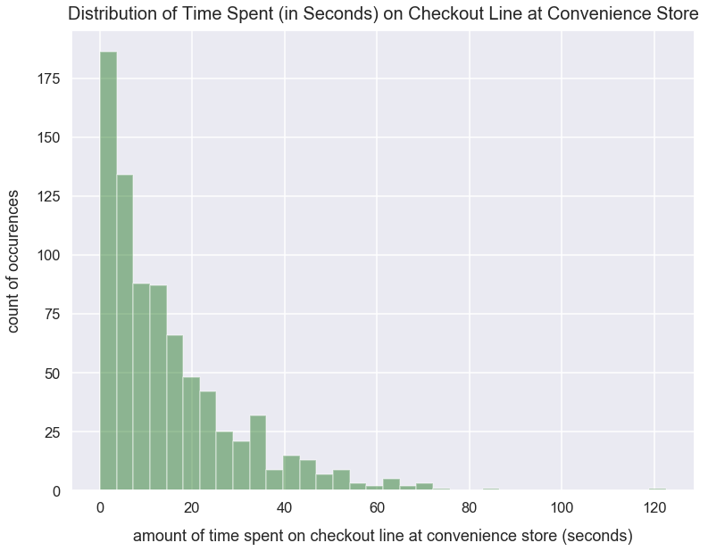

Exponential Distribution
- Aug 25 • 2 min read
- Key Terms: exponential distribution, python, numpy
A exponential distribution often represents the amount of time until a specific event occurs.
One popular example is the duration of time people spend on a website. I'd expect most people to stay on site for 1-4 seconds, fewer people to stay for 4-8 seconds and even fewer to stay for 9+ seconds. To describe this clearly as an exponential distribution, I'd expect exponentially fewer people to stay on site for every increase in time in seconds.
Another example is the duration of time people spend on line waiting to checkout at a convenience store any given day. I'd expect most people can checkout immediately - essentially no line. I'd expect exponentially fewer people to wait each successive time increase in seconds.
Import Modules
import seaborn as sns
import numpy as np
import matplotlib.pyplot as plt
%matplotlib inline
Visualization styling code.
sns.set(rc={'figure.figsize':(12.5, 9.5)})
sns.set_context('talk')
Build an Exponential Distribution
Using the numpy package's random module, we can call the exponential() method to sample from a list of values that would resemble an exponential distribution. We set the following arguments:
scaleas the scale parameter; the higher the value, the less "steep" your exponential distributionsizeas the number of values drawn from an exponential distribution
np.random.seed(42) # seed random number generator with fixed value so we always get same values below
exponential_distribution_values = list(np.random.exponential(scale=15, size=800))
Plot a histogram of the values in exponential_distribution_values using Seaborn's distplot() method.
sns.distplot(exponential_distribution_values, kde=False, color='darkgreen')
plt.title("Distribution of Time Spent (in Seconds) on Checkout Line at Convenience Store", fontsize=20, y=1.012)
plt.xlabel("amount of time spent on checkout line at convenience store (seconds)", labelpad=15)
plt.ylabel("count of occurences", labelpad=15);

This visualization shows most people spent less than 10 seconds waiting on line. With each increase in time, exponentially fewer people had waited that time amount.